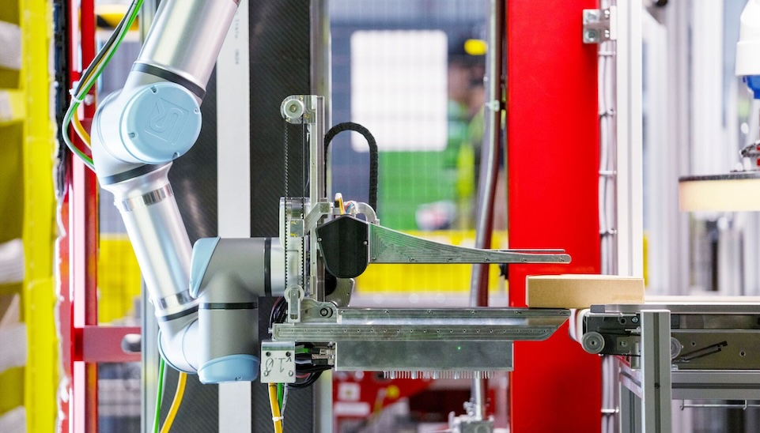

Amazon Web Services представила Physical AI Toolchain — открытый инструментарий, который объединяет пять этапов работы над «физическим ИИ»: генерация синтетических данных, обучение модели, симуляция и валидация, развёртывание на edge-устройствах и постоянное улучшение уже работающего робота. Всё это собрано в один рабочий процесс на облачных сервисах AWS и в себя стек NVIDIA: Isaac Sim, Isaac Lab, Isaac GR00T и Cosmos.
Проблема, которую решает тулчейн, — не алгоритмы, а инфраструктура вокруг них. «Мы пытаемся сделать эту кнопку "сделать легко", чтобы люди могли сосредоточиться на решаемой задаче, а не переживать обо всей инфраструктуре», — объяснил Шри Элапролу, директор Frontier AI Science and Engineering в AWS. Компоненты можно брать по одному или собрать в сквозной конвейер: собрали демонстрации того, как робот выполняет задачу, нагенерировали синтетических сценариев, дообучили модель, прогнали её в симуляции — и только потом выкатили на реального робота. За обучение отвечает Amazon SageMaker, за доставку моделей на устройства — AWS IoT Greengrass.
Отдельный упор — данные. «Объём данных, нужный для обучения таких моделей, огромен, а открытых данных мало — в отличие от LLM, где их в интернете хоть отбавляй. Как генерировать данные, репрезентативные для реального мира? Вот что мы пытаемся решить», — говорит Элапролу. Отдельно в AWS подчёркивают: тулчейн — не прямая замена RoboMaker, облачной платформы симуляции, которую закрыли в 2025 году; это более широкий набор технологий разработки.
Гонка платформ «физического ИИ» разгоняется: у Microsoft ещё в этом году появился свой открытый Azure Physical AI Toolchain, который выносит тяжёлые ИИ-задачи робота на edge- или облачные GPU. Открытость AWS-набора и плотная связка с экосистемой NVIDIA — ставка на то, что стандарты робототехнической разработки будут расти вокруг облачных стеков, а не проприетарных SDK отдельных производителей роботов.